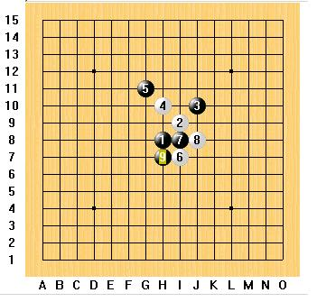
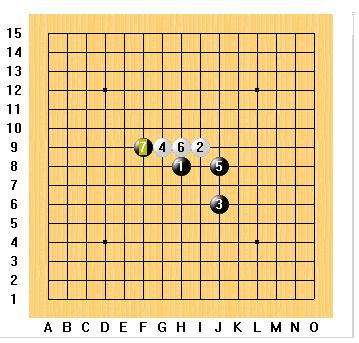
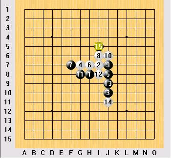

请教高手,这两个局面白怎么下?
首页
习题专区
#1 请教高手,这两个局面白怎么下? 作者：wuxiao 发表时间：2008-11-28 10:01:43

#2 Re:请教高手,这两个局面白怎么下? 作者：快乐天羽 发表时间：2008-11-28 10:24:36
=======上图对应的爱五子棋谱代码如下，以便你拆解：========
h8i9j6g9j8h9f9i10j9j10
======================================================
#3 Re:请教高手,这两个局面白怎么下? 作者：快乐天羽 发表时间：2008-11-28 10:46:03
你这个长星我也没什么研究，但感觉这个9应该不是简单败，或者说是属于平衡变化吧。希望哪位朋友有什么好思路，发上来大家参考
#4 Re:请教高手,这两个局面白怎么下? 作者：wuxiao 发表时间：2008-11-28 10:52:48
谢谢"快乐天羽"!不过.........这样之后呢?
#5 Re:Re:请教高手,这两个局面白怎么下? 作者：快乐天羽 发表时间：2008-11-28 13:16:01
=======上图对应的爱五子棋谱代码如下，以便你拆解：========
h8i9j6g9j8h9f9i10j9j10g8i8j7j5i11k10l10j11
======================================================
#6 Re:请教高手,这两个局面白怎么下? 作者：t周 发表时间：2008-11-28 20:37:27
=======上图对应的爱五子棋谱代码如下，以便你拆解：========
h8i9j6g9j8h9f9i8i7j7g10k9j9k10
======================================================
#7 Re:请教高手,这两个局面白怎么下? 作者：冷面孤煞 发表时间：2008-11-28 21:04:04
=======上图对应的爱五子棋谱代码如下，以便你拆解：========
h8i9j6g9j8h9f9i8j9j7g10i10i11j11g8l5k6i7
======================================================
#8 Re:请教高手,这两个局面白怎么下? 作者：冷面孤煞 发表时间：2008-11-28 21:06:54
=======上图对应的爱五子棋谱代码如下，以便你拆解：========
h8i9j6g9j8h9f9g10g8i8j7j9k9k10l11g6h7i6
======================================================
#9 Re:请教高手,这两个局面白怎么下? 作者：行云流水 发表时间：2008-12-22 17:35:23
6楼的黑15走K8，白貌似无胜！
7楼的黑9走18最强，白貌似无胜！
8楼的黑9走12最强，白无胜！